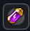
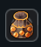

AutoLoot automatycznie zbiera przedmioty, które dropią z potworów po ich zabiciu, wysyłając je bezpośrednio do Skrzyni AutoLoot (Baú do AutoLoot).
Ważna Uwaga:
Zawsze gdy dodasz lub zmienisz przedmioty na liście zablokowanych, pamiętaj, aby kliknąć na Save Changes. W przeciwnym razie zmiany nie zostaną zastosowane.
W lewym górnym rogu interfejsu AutoLoot znajduje się przycisk Filtru Rzadkich Przedmiotów (Filtro de Itens Raros). Kiedy jest Aktywowany (Ativado), system zaczyna zbierać tylko i wyłącznie przedmioty z Rzadkościami (Raridades). Przedmioty łączone/podzielne (stackowalne) nadal są zbierane normalnie, niezależnie od rzadkości. Filtr jest funkcją ekskluzywną dla Premium Account.
Witaminy są specjalnymi przedmiotami, które zwiększają energię do AutoLoot. Im większy poziom energii, tym mniejszy będzie czas oczekiwania między wysyłkami do depozytu. Witaminy można nabyć w Shopie.

| Poziom | Szansa na Sukces | Wymagane Witaminy | Czas Oczekiwania (Cooldown) |
|---|---|---|---|
| Poziom 0 | — | — | 20 min |
| Poziom 1 | 90% | 2 witaminy | 18 min |
| Poziom 2 | 70% | 3 witaminy | 15 min |
| Poziom 3 | 60% | 4 witaminy | 10 min |
| Poziom 4 | 50% | 5 witamin | 5 min |
| Poziom 5 | 40% | 8 witamin | 2 min (Maksimum) |
Każdy gracz zaczyna z 12 slotami dostępnymi w systemie. Pojemność rozwija się wraz z postępem postaci:
Przykład skalowania slotów z poziomu:
Ponadto w Shopie możliwe jest nabycie ekstra slotów do AutoLoot, co pozwala jeszcze bardziej rozszerzyć pojemność systemu.

Z witaminami, dodatkowymi slotami i Filtrem Rzadkich Przedmiotów, system AutoLoot staje się szybszy, wydajniejszy i w pełni personalizowalny dla każdego gracza.